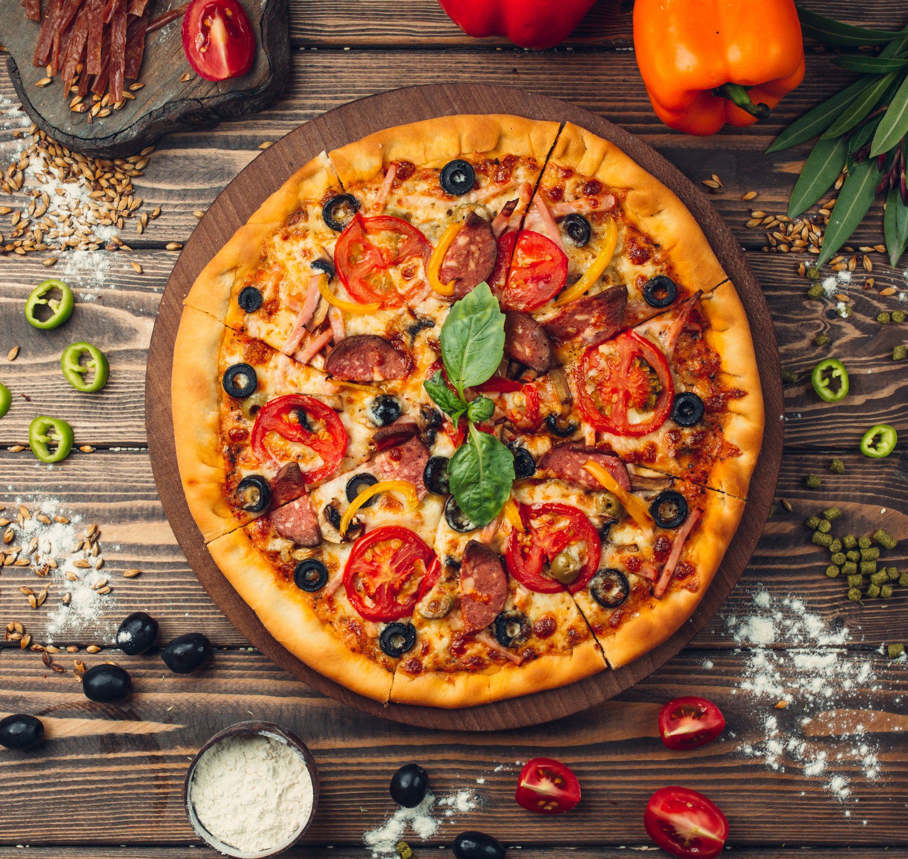
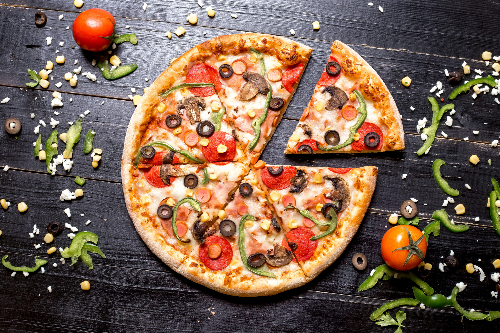
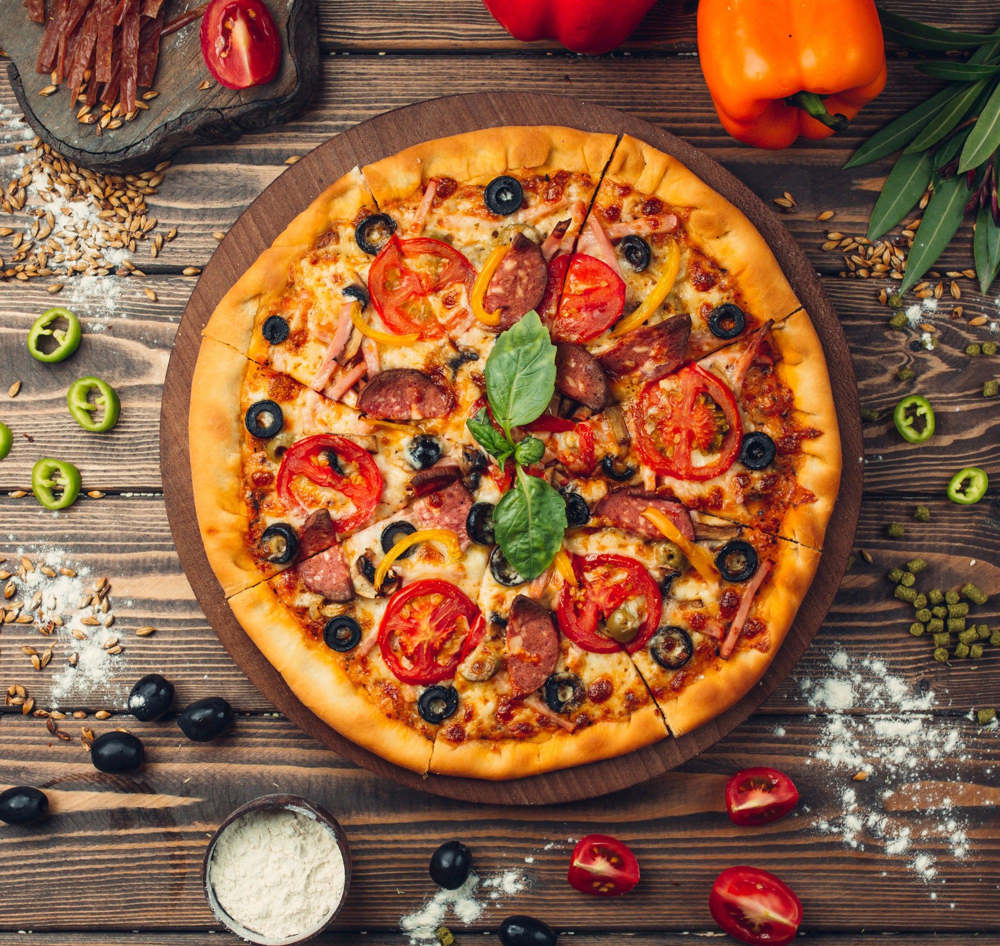
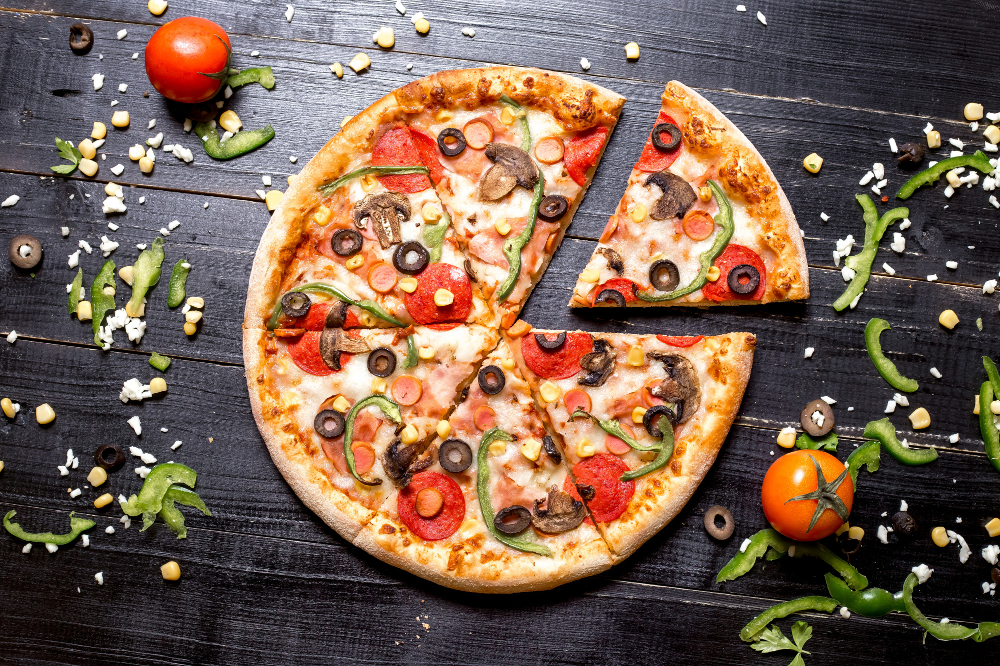
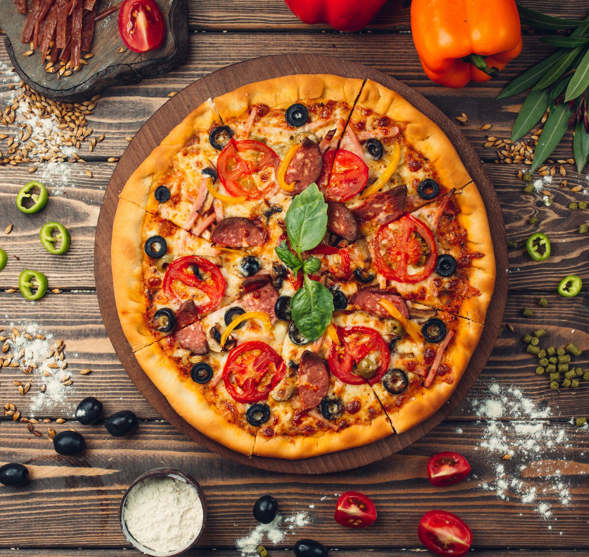
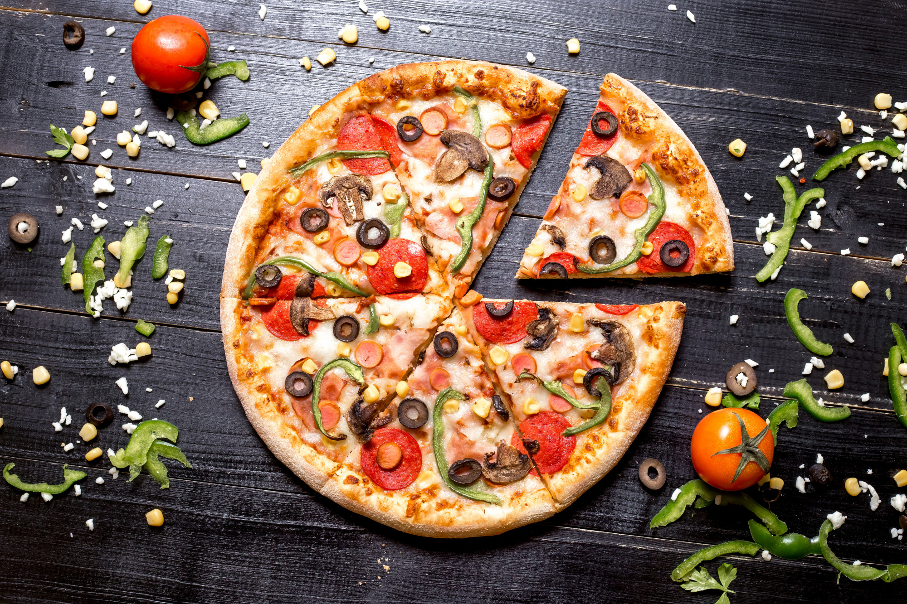
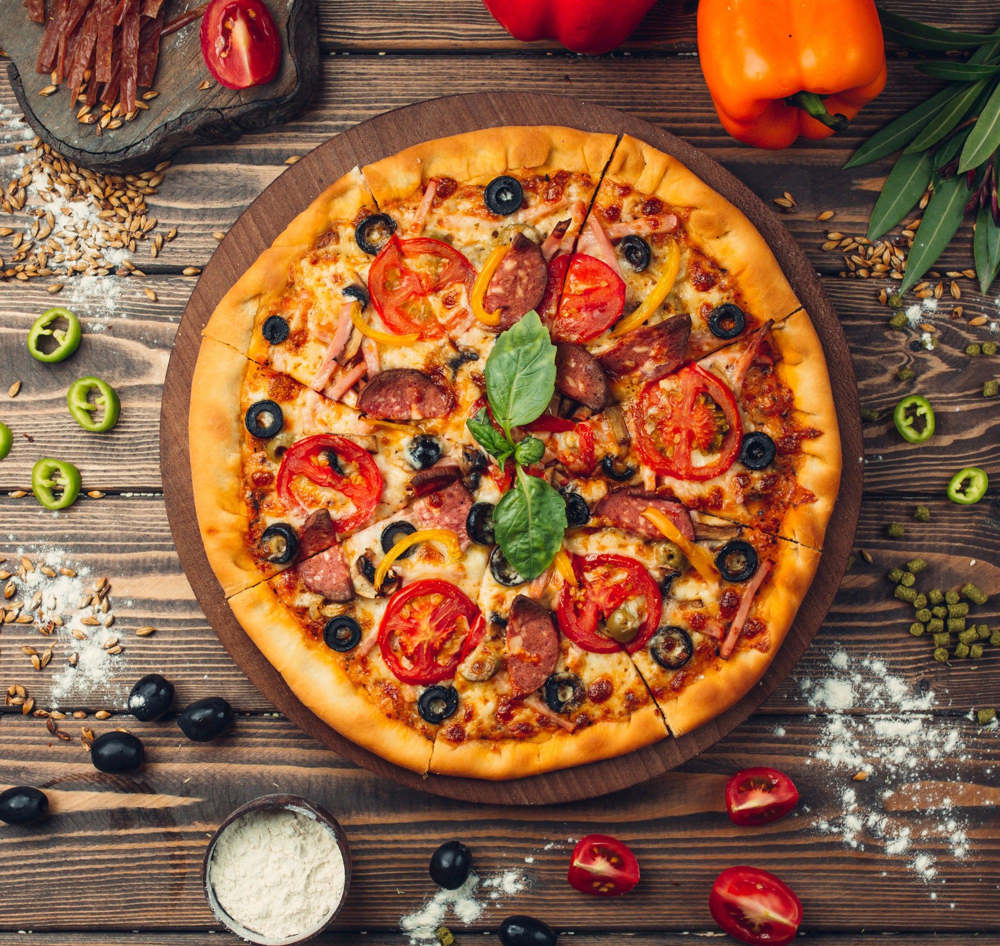
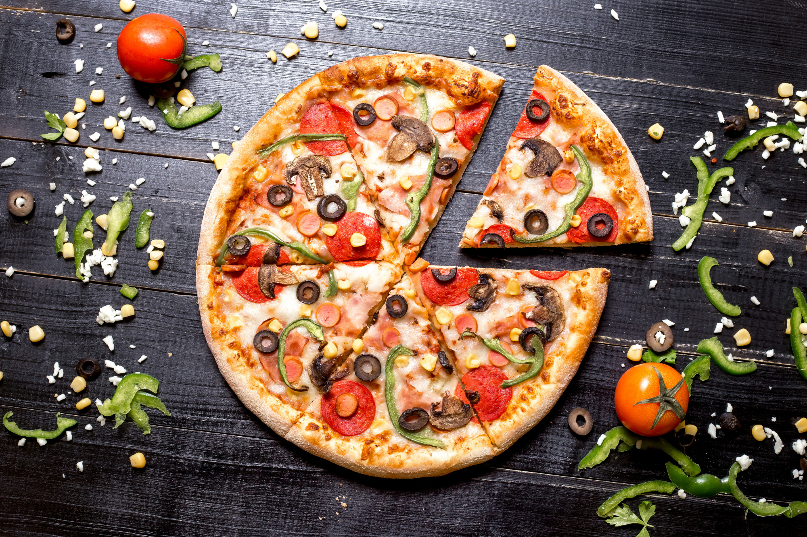

 



 Nasce nel 2009 come una piccola attività familiare, originariamente
chiamatasi "LaPizzera", nel 2013 cambia nome in "PizzaOK".
Il locale ha scarso successo nei primi anni di attività,
i principali clienti erano studenti di "pausa pomeridiana" che avevano bisogno
di un pranzo veloce per poter successivamente tornare nelle rispettive scuole.
Il proprietario a tal punto decide di puntare la sua attenzione proprio sugli studenti,
di cui avrebbe attratto l'attenzione tramite prezzi molto competitivi.
I suoi rivali avevano prezzi abbastanza alti, o non del tutto accessibili, ciò
portò una fetta di quest'ultimi studenti al nostro locale, dove avrebbero scoperto
immense bontà culinarie, ad un prezzo accessibile a tutti.
Nasce nel 2009 come una piccola attività familiare, originariamente
chiamatasi "LaPizzera", nel 2013 cambia nome in "PizzaOK".
Il locale ha scarso successo nei primi anni di attività,
i principali clienti erano studenti di "pausa pomeridiana" che avevano bisogno
di un pranzo veloce per poter successivamente tornare nelle rispettive scuole.
Il proprietario a tal punto decide di puntare la sua attenzione proprio sugli studenti,
di cui avrebbe attratto l'attenzione tramite prezzi molto competitivi.
I suoi rivali avevano prezzi abbastanza alti, o non del tutto accessibili, ciò
portò una fetta di quest'ultimi studenti al nostro locale, dove avrebbero scoperto
immense bontà culinarie, ad un prezzo accessibile a tutti.
| Lunedì | Martedì | Mercoledì | Giovedì |
|---|---|---|---|
| 13:00 - 19:00 | 13:00 - 19:00 | 13:00 - 19:00 | 13:00 - 19:00 |